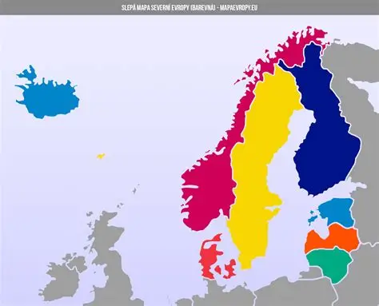

Severní Evropa

Severní Evropa je region s krásnou přírodou, moderními městy a vysokou kvalitou života. Najdete zde fjordy, jezera, lesy a polární záře. Je to ideální místo pro ty, kteří hledají kombinaci dobrodružství, relaxace a poznávání.
Mezi nejnavštěvovanější země Severní Evropy patří Švédsko, Norsko, Dánsko a Finsko. Každá z těchto zemí má svůj vlastní jedinečný charakter a nabízí nepřeberné množství zážitků.